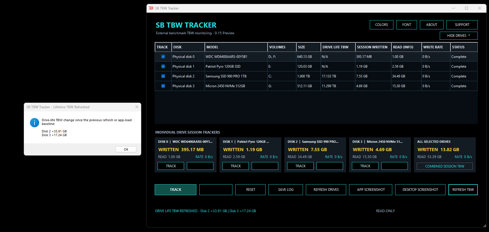

Multi-Drive Tracking
Select and monitor multiple physical drives in the same session, including supported HDDs, SATA SSDs and NVMe SSDs.
Track how much data is written to one or more drives during a user-controlled session. Monitor individual drives, combined totals and current write activity from one focused Windows utility.
SB TBW Tracker observes drive-write activity during the exact period you choose. Use it during file transfers, installations, updates, backups, content creation, testing or everyday workloads.

A practical interface for observing individual and combined storage-write activity.
Select and monitor multiple physical drives in the same session, including supported HDDs, SATA SSDs and NVMe SSDs.
Start and stop tracking for individual drives without interrupting other active drive sessions.
View the total amount written across all selected drives while retaining separate results for each device.
Observe current write activity using automatically formatted B/s, KB/s, MB/s and GB/s values.
View available lifetime-write information when it is exposed by the drive, controller, storage path and Windows.
Save session results and capture either the application or complete desktop for documentation and comparison.
Select the drives you want to watch, one a few or all. You can select them individually or start tracking all of them. TBW is measured at the start of opening the app, Watch the totals add up when using the refresh button.
You manually control the session lengths. The app is light enough for long sessions.
Observe drive writes produced while installing applications, games, updates or downloadable content.
Compare the reads and writes generated by copying, moving, synchronizing or backing up data.
Monitor session writes caused by rendering, recording, transcoding, caching or other production activity and every day use.
Record how much data is written during storage evaluations, controlled tests and performance workloads and save the results.
Observe writes produced during the session between start and stop. Refresh the drives to view totals for all drives within that session.
Compare session totals with available lifetime-write information to have a better way to keep track of multiple drive usage.
The current release is a signed, portable Windows application. No conventional installation is required. Download the ZIP, extract the executable and run it.
Compatibility and reported values depend on the storage device, firmware, controller, driver and information exposed through Windows. Unsupported lifetime-write values are displayed as N/A.